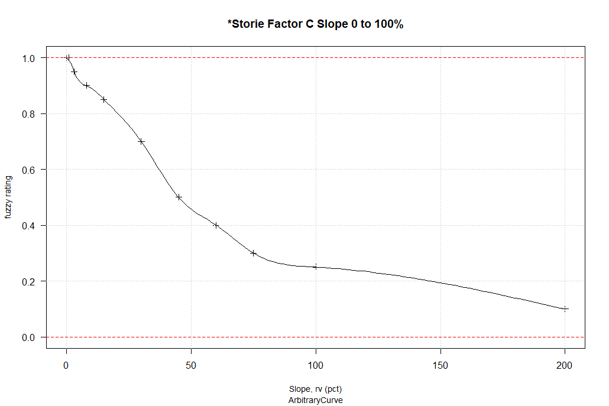

To install the alpha version of the “interpretation engine” R package install the dependencies, then use remotes to get the latest version from GitHub.
# install required packages
install.packages(c("XML", "caret", "data.tree", "digest", "doParallel", "dplyr",
"foreach", "plyr", "raster", "soilDB", "forcats", "tidyr", "remotes"))
# install package from ncss-tech interpretation-engine repository
remotes::install_github('ncss-tech/interpretation-engine')Input data for @josephbrehm’s demonstration and other demonstrations can be found in the inst/extdata portion of this repository. A demonstration script and input boundary files can be found in /demo folder.
To have all that data to try, you can download the repository as a static ZIP file, or “clone” with git it so you can keep up with the changes that are coming!
Interpretations Outside of NASIS
There are many reasons for wanting to develop, test, and apply interpretations to soil data outside the context of NASIS. This project aims to create a prototype from existing interpretation rules, evaluations, and properties as managed in NASIS. Once the prototype is complete it should be possible to generate fuzzy ratings from arbitrary sources of soil and environmental data sources.
How Does it Work?
The data.tree package defines objects and methods that are well suited to the task of describing the hierachy of rules and evaluations. The mapping between domain values and fuzzy membership can be accomplished with approxfun.
Outline
- load all rules, evaluations, properties into R via ODBC as
data.frameobjects - load single rule and (recursively) load sub-rules into a
data.treeobject - load evaluation functions into each terminal node of
data.treeobject - create wrapper function to send properties to evaluation functions
- combine fuzzy values via operators and hedges to generate a final fuzzy rating
Examples
- http://ncss-tech.github.io/interpretation-engine/misc/nasis-interp-guts.html
- http://ncss-tech.github.io/interpretation-engine/misc/D3/tree.html

Rule Trees
The following blocks of text are a simple representation of the data.tree objects that describe the hierachy of rules and evaluations that define an interpretation.
levelName Type Value RefId rule_refid eval_refid evalType
1 Dust PM10 and PM2.5 Generation
2 °--RuleHedge_de473ab5 multiply 0.5
3 °--RuleOperator_0a397761 product
4 ¦--Dryness Index 0.5 to 3 18448 18448 Sigmoid
5 °--RuleOperator_7025ab26 sum
6 ¦--Dust Due to Gypsum 23659 23659
7 ¦ °--RuleHedge_5c18cb73 not_null_and 0
8 ¦ °--Dust from Gypsum Content 2 to 15 Percent 18446 18446 Sigmoid
9 °--Dust Due to Silt and Clay 23661 23661
10 °--RuleHedge_caf7e2e0 null_not_rated 0
11 °--Dust from Silt and Clay Content 20 to 70 Percent Sand 18447 18447 Linear
CA Storie Index
Using the data.tree representation of the CA Storie Index Primary Rule, we can extract the entire set of evaluations and required properties:
| evaluation | property | |
|---|---|---|
| 1 | *Storie Factor A Pedon Group not rated taxonomy rev | TAXONOMIC ORDER |
| 2 | *Storie Factor A Pedon Group 1 and 2 soil depth | *Storie depth to first restriction for Profile Group 1-3 |
| 3 | *Storie Factor A Pedon Group 1 suborders | TAXONOMIC SUBORDER |
| 4 | *Storie Factor A Pedon Group 1 great groups | TAXONOMIC GREAT GROUP |
| 5 | *Storie Factor A Pedon Group 1 subgroups | TAXONOMIC SUBGROUP |
| 6 | *Storie Factor A Pedon Group 7, 8, 9 landform | *Storie landforms in hills and mountains of California |
| 8 | *Storie Factor A Pedon Group 2 suborders Arents and Cambids | TAXONOMIC SUBORDER |
| 9 | *Storie Factor A Pedon Group 2 great groups | TAXONOMIC GREAT GROUP |
| 11 | *Storie Factor A Pedon Group 3 great groups | TAXONOMIC GREAT GROUP |
| 12 | *Storie Factor A Pedon Group 4/6 great groups | TAXONOMIC GREAT GROUP |
| 13 | *Storie featkind = abrupt textural change | *Storie where at least one cdfkind = abrupt textural change |
| 14 | Component restriction = “abrupt textural change” | Component restrictions |
| 15 | *Storie Factor A Pedon Group 3 soil depth | *Storie depth to first restriction for Profile Group 1-3 |
| 16 | *Storie Factor A Pedon Group 5 soil depth | *Storie depth to pan for Profile Group 5 |
| 17 | *Storie Factor A Pedon Group 5 durids | TAXONOMIC SUBORDER |
| 18 | *Storie Factor A Pedon Group 5 great groups | TAXONOMIC GREAT GROUP |
| 19 | *Storie Factor A Pedon Group 5 subgroups | TAXONOMIC SUBGROUP |
| 21 | *Storie Factor A Pedon Group 4/6 depth abrupt text featkind | *Storie depth to featknd abrupt tex change Profile Group 4/6 |
| 22 | *Storie Factor A Pedon Group 4/6 depth abrupt tex reskind | *Storie depth to reskind abrupt tex change Profile Grp 4/6 |
| 27 | *Storie Factor A Pedon Group 7 and 8 soil depth | Storie depth to hard bedrock/petro for Profile Grp 7/8/9 |
| 29 | *Storie Factor A Pedon Group 9 soil depth | *Storie depth to soft bedrock or densics for Profile Grp 7-9 |
| 30 | *Storie Factor B Surface Texture | *Storie texture score - first horizon below duff |
| 31 | *Storie Factor B rock frag volume 0-25 cm | ROCK FRAG VOLUME IN DEPTH 0-25 cm OR RESTRICTION |
| 32 | *Storie Factor C Slope 0 to 100% | Slope, rv |
| 33 | *Storie Factor X Toxicity EC maximum 0-25 cm | EC MAXIMUM IN DEPTH 0-25 CM BELOW DUFF |
| 34 | *Storie Factor X Toxicity SAR maximum 0-25 cm | SAR MAXIMUM IN DEPTH 0-25 CM BELOW DUFF |
| 35 | *Storie Factor X Toxicity pH minimum 0-25 cm | pH MINIMUM IN DEPTH 0-25 CM BELOW DUFF |
| 36 | *Storie Factor X Toxicity pH maximum 0-25 cm | pH MAXIMUM IN DEPTH 0-25 CM BELOW DUFF |
| 37 | *Storie Factor X drainage class = moderately | GRL-DRAINAGE CLASS |
| 38 | Storie component local phase is drained* | **Storie component local phase is drained |
| 39 | Storie component local phase is partially drained* | **Storie component local phase is partially drained |
| 40 | *Storie Factor X drainage class = somewhat poorly | GRL-DRAINAGE CLASS |
| 43 | *Storie Factor X drainage class = poor or very poorly | GRL-DRAINAGE CLASS |
| 46 | *Storie Factor X drainage class = well | GRL-DRAINAGE CLASS |
| 47 | *Storie Factor X drainage class = all excessively | GRL-DRAINAGE CLASS |
| 48 | *Storie Factor X landscape ponding in growing season | *Storie ponding interaction max in growing season |
| 49 | Landscape Flooding “NONE” | FLOODING FREQUENCY (Maximum Frequency) |
| 50 | *Storie Factor X landscape flooding in growing season | *Storie flooding interaction max in growing season |
| 52 | *Storie Factor X erosion class = 1 | Erosion Class in component table |
| 53 | *Storie Factor X erosion class = 2 | Erosion Class in component table |
| 54 | *Storie Factor X erosion class = 3 | Erosion Class in component table |
| 55 | *Storie Factor X erosion class = 4 | Erosion Class in component table |
| 56 | *Storie Factor X erosion class = 0 | Erosion Class in component table |
| 63 | *Storie Factor X landscape wetness, grow. season, 25-100 | *Storie near surface wetness rv depth in growing season |
| 64 | *Storie Factor X temperature regime | *Storie temperature regime score |
data.tree object:
levelName Type Value RefId rule_refid eval_refid evalType
1 AGR - California Revised Storie Index (CA)
2 °--RuleOperator_31a1eb65 product
3 ¦--*Storie Factor A Not Rated Soil Orders rev 49446 49446
4 ¦ °--RuleHedge_1193d3c1 null_or 0
5 ¦ °--*Storie Factor A Pedon Group not rated taxonomy rev 50481 50481 Crisp
6 ¦--*Storie Factor A 15976 15976
7 ¦ °--RuleOperator_01948bb8 or
8 ¦ ¦--*Storie Factor A Profile Group 1 rev 49448 49448
9 ¦ ¦ °--RuleOperator_a72ba798 and
10 ¦ ¦ ¦--RuleOperator_b267bf8e times
11 ¦ ¦ ¦ ¦--*Storie Factor A Profile Group 1 and 2 fuzzy depth 15967 15967
12 ¦ ¦ ¦ ¦ °--RuleHedge_7fad1a79 not_null_and 0
13 ¦ ¦ ¦ ¦ °--*Storie Factor A Pedon Group 1 and 2 soil depth 12916 12916 ArbitraryCurve
14 ¦ ¦ ¦ °--*Storie Factor A Profile Group 1 taxonomy rev 49447 49447
15 ¦ ¦ ¦ °--RuleOperator_4d1fdd8f or
16 ¦ ¦ ¦ ¦--RuleHedge_44b2d8f3 not_null_and 0
17 ¦ ¦ ¦ ¦ °--*Storie Factor A Pedon Group 1 suborders 12914 12914 Crisp
18 ¦ ¦ ¦ ¦--RuleHedge_f2a5b4ba not_null_and 0
19 ¦ ¦ ¦ ¦ °--*Storie Factor A Pedon Group 1 great groups 12915 12915 Crisp
20 ¦ ¦ ¦ °--RuleHedge_25e606a5 not_null_and 0
21 ¦ ¦ ¦ °--*Storie Factor A Pedon Group 1 subgroups 13092 13092 Crisp
22 ¦ ¦ °--RuleHedge_ea4b1839 not 0
23 ¦ ¦ °--*Storie Factor A Profile Group 7,8,9 landform 15974 15974
24 ¦ ¦ °--RuleHedge_608f03c8 not_null_and 0
25 ¦ ¦ °--*Storie Factor A Pedon Group 7, 8, 9 landform 12917 12917 Crisp
26 ¦ ¦--*Storie Factor A Profile Group 2 rev 49428 49428
27 ¦ ¦ °--RuleOperator_8a20de79 and
28 ¦ ¦ ¦--RuleOperator_71911310 times
29 ¦ ¦ ¦ ¦--*Storie Factor A Profile Group 1 and 2 fuzzy depth 15967 15967
30 ¦ ¦ ¦ ¦ °--RuleHedge_7fad1a79 not_null_and 0
31 ¦ ¦ ¦ ¦ °--*Storie Factor A Pedon Group 1 and 2 soil depth 12916 12916 ArbitraryCurve
32 ¦ ¦ ¦ °--*Storie Factor A Profile Group 2 taxonomy 15991 15991
33 ¦ ¦ ¦ °--RuleOperator_0ad34d47 or
34 ¦ ¦ ¦ ¦--RuleHedge_698c3a67 not_null_and 0
35 ¦ ¦ ¦ ¦ °--*Storie Factor A Pedon Group 2 suborders Arents and Cambids 12929 12929 Crisp
36 ¦ ¦ ¦ °--RuleHedge_8fbcb397 not_null_and 0
37 ¦ ¦ ¦ °--*Storie Factor A Pedon Group 2 great groups 12927 12927 Crisp
38 ¦ ¦ °--RuleHedge_ea4b1839 not 0
39 ¦ ¦ °--*Storie Factor A Profile Group 7,8,9 landform 15974 15974
40 ¦ ¦ °--RuleHedge_608f03c8 not_null_and 0
41 ¦ ¦ °--*Storie Factor A Pedon Group 7, 8, 9 landform 12917 12917 Crisp
42 ¦ ¦--*Storie Factor A Profile Group 3 16017 16017
43 ¦ ¦ °--RuleOperator_a84c18cd and
44 ¦ ¦ ¦--*Storie Factor A Profile Group 3 taxonomy 15992 15992
45 ¦ ¦ ¦ °--RuleOperator_c859411b or
46 ¦ ¦ ¦ ¦--RuleHedge_a14e5a0e not_null_and 0
47 ¦ ¦ ¦ ¦ °--*Storie Factor A Pedon Group 3 great groups 12931 12931 Crisp
48 ¦ ¦ ¦ °--RuleOperator_15a86db4 and
49 ¦ ¦ ¦ ¦--RuleHedge_da245a09 not_null_and 0
50 ¦ ¦ ¦ ¦ °--*Storie Factor A Pedon Group 4/6 great groups 12934 12934 Crisp
51 ¦ ¦ ¦ ¦--RuleHedge_61008193 not 0
52 ¦ ¦ ¦ ¦ °--RuleHedge_1a2fddac not_null_and 0
53 ¦ ¦ ¦ ¦ °--*Storie featkind = abrupt textural change 13106 13106 Crisp
54 ¦ ¦ ¦ °--RuleHedge_214d73a9 not 0
55 ¦ ¦ ¦ °--RuleHedge_137ed382 not_null_and 0
56 ¦ ¦ ¦ °--Component restriction = "abrupt textural change" 11459 11459 Crisp
57 ¦ ¦ °--*Storie Factor A Profile Group 3 fuzzy depth 16016 16016
58 ¦ ¦ °--RuleHedge_725c57d0 not_null_and 0
59 ¦ ¦ °--*Storie Factor A Pedon Group 3 soil depth 12938 12938 ArbitraryCurve
60 ¦ ¦--*Storie Factor A Profile Group 5 16038 16038
61 ¦ ¦ °--RuleOperator_38a12238 and
62 ¦ ¦ ¦--RuleOperator_1ffc51b2 times
63 ¦ ¦ ¦ ¦--*Storie Factor A Profile Group 5 fuzzy depth 16035 16035
64 ¦ ¦ ¦ ¦ °--RuleHedge_a4df1747 not_null_and 0
65 ¦ ¦ ¦ ¦ °--*Storie Factor A Pedon Group 5 soil depth 12939 12939 ArbitraryCurve
66 ¦ ¦ ¦ °--*Storie Factor A Profile Group 5 taxonomy 16037 16037
67 ¦ ¦ ¦ °--RuleOperator_d8ea2331 or
68 ¦ ¦ ¦ ¦--RuleHedge_aba67333 not_null_and 0
69 ¦ ¦ ¦ ¦ °--*Storie Factor A Pedon Group 5 durids 12932 12932 Crisp
70 ¦ ¦ ¦ ¦--RuleHedge_a831076b not_null_and 0
71 ¦ ¦ ¦ ¦ °--*Storie Factor A Pedon Group 5 great groups 12933 12933 Crisp
72 ¦ ¦ ¦ °--RuleHedge_7954eb2b not_null_and 0
73 ¦ ¦ ¦ °--*Storie Factor A Pedon Group 5 subgroups 13093 13093 Crisp
74 ¦ ¦ °--RuleHedge_ea4b1839 not 0
75 ¦ ¦ °--*Storie Factor A Profile Group 7,8,9 landform 15974 15974
76 ¦ ¦ °--RuleHedge_608f03c8 not_null_and 0
77 ¦ ¦ °--*Storie Factor A Pedon Group 7, 8, 9 landform 12917 12917 Crisp
78 ¦ ¦--*Storie Factor A Profile Group 4/6 16040 16040
79 ¦ ¦ °--RuleOperator_867650f1 times
80 ¦ ¦ ¦--*Storie Factor A Profile Group 4/6 fuzzy depth 16041 16041
81 ¦ ¦ ¦ °--RuleOperator_804837c6 and
82 ¦ ¦ ¦ ¦--RuleHedge_74ec3ef6 not_null_and 0
83 ¦ ¦ ¦ ¦ °--*Storie Factor A Pedon Group 4/6 depth abrupt text featkind 13207 13207 ArbitraryCurve
84 ¦ ¦ ¦ °--RuleHedge_5d562f5b not_null_and 0
85 ¦ ¦ ¦ °--*Storie Factor A Pedon Group 4/6 depth abrupt tex reskind 13208 13208 ArbitraryCurve
86 ¦ ¦ °--*Storie Factor A Profile Group 4/6 taxonomy w/ abrupt text 15996 15996
87 ¦ ¦ °--RuleOperator_d7eb1bf2 and
88 ¦ ¦ ¦--*Storie Factor A Pedon Group 4/6 great groups 12934 12934 Crisp
89 ¦ ¦ °--RuleOperator_55f9f74b or
90 ¦ ¦ ¦--*Storie featkind = abrupt textural change 13106 13106 Crisp
91 ¦ ¦ °--Component restriction = "abrupt textural change" 11459 11459 Crisp
92 ¦ °--*Storie Factor A Profile Groups 7, 8 or 9 15975 15975
93 ¦ °--RuleOperator_e9966d4d and
94 ¦ ¦--RuleOperator_48460ff8 times
95 ¦ ¦ ¦--*Storie Factor A Profile Group 7,8,9 landform 15974 15974
96 ¦ ¦ ¦ °--RuleHedge_608f03c8 not_null_and 0
97 ¦ ¦ ¦ °--*Storie Factor A Pedon Group 7, 8, 9 landform 12917 12917 Crisp
98 ¦ ¦ °--*Storie Factor A Profile Groups 7, 8, 9 fuzzy depth (hard) 15971 15971
99 ¦ ¦ °--RuleHedge_62ac73b3 not_null_and 0
100 ¦ ¦ °--*Storie Factor A Pedon Group 7 and 8 soil depth 12919 12919 ArbitraryCurve
101 ¦ °--RuleOperator_9ffcd0a2 times
102 ¦ ¦--*Storie Factor A Profile Group 7,8,9 landform 15974 15974
103 ¦ ¦ °--RuleHedge_608f03c8 not_null_and 0
104 ¦ ¦ °--*Storie Factor A Pedon Group 7, 8, 9 landform 12917 12917 Crisp
105 ¦ °--*Storie Factor A Profile Group 7, 8 and 9 fuzzy depth (soft) 16044 16044
106 ¦ °--RuleHedge_c0fd8926 not_null_and 0
107 ¦ °--*Storie Factor A Pedon Group 9 soil depth 12947 12947 ArbitraryCurve
108 ¦--*Storie Factor B rev 49444 49444
109 ¦ °--RuleOperator_21467f0e times
110 ¦ ¦--*Storie Factor B surface texture rev 49443 49443
111 ¦ ¦ °--RuleHedge_14c104e8 null_not_rated 0
112 ¦ ¦ °--*Storie Factor B Surface Texture 50479 50479 ArbitraryCurve
113 ¦ °--*Storie Factor B surface rock fragments rev 49445 49445
114 ¦ °--*Storie Factor B rock frag volume 0-25 cm 50480 50480 ArbitraryLinear
115 ¦--*Storie Factor C Slope fuzzy 15748 15748
116 ¦ °--RuleHedge_d4054451 null_not_rated 0
117 ¦ °--*Storie Factor C Slope 0 to 100% 12800 12800 ArbitraryCurve
118 ¦--*Storie Factor X (all chemistry) rev 49440 49440
119 ¦ °--RuleOperator_12d91bc8 and
120 ¦ ¦--*Storie Factor X (toxicity EC) rev 49441 49441
121 ¦ ¦ °--RuleHedge_7334ea83 null_or 0
122 ¦ ¦ °--*Storie Factor X Toxicity EC maximum 0-25 cm 50477 50477 ArbitraryCurve
123 ¦ ¦--*Storie Factor X (toxicity SAR) rev 49442 49442
124 ¦ ¦ °--RuleHedge_70d0ed1f null_or 0
125 ¦ ¦ °--*Storie Factor X Toxicity SAR maximum 0-25 cm 50478 50478 ArbitraryLinear
126 ¦ °--*Storie Factor X (toxicity pH) rev 49439 49439
127 ¦ °--RuleHedge_dea55415 null_or 0
128 ¦ °--RuleOperator_37d7e82f and
129 ¦ ¦--*Storie Factor X Toxicity pH minimum 0-25 cm 50475 50475 ArbitraryLinear
130 ¦ °--*Storie Factor X Toxicity pH maximum 0-25 cm 50476 50476 ArbitraryLinear
131 ¦--*Storie Factor X (all hydrologic and erosion features) 15746 15746
132 ¦ °--RuleOperator_e5feb45e and
133 ¦ ¦--*Storie Factor X (drainage class) 16320 16320
134 ¦ ¦ °--RuleOperator_3be6bd57 or
135 ¦ ¦ ¦--RuleOperator_fb03758e sum
136 ¦ ¦ ¦ ¦--RuleHedge_773dd408 limit 0.9
137 ¦ ¦ ¦ ¦ °--*Storie Factor X drainage = moderately well 16549 16549
138 ¦ ¦ ¦ ¦ °--RuleHedge_cacbefaa null_not_rated 0
139 ¦ ¦ ¦ ¦ °--*Storie Factor X drainage class = moderately 13114 13114 Crisp
140 ¦ ¦ ¦ °--RuleOperator_bff68afb or
141 ¦ ¦ ¦ ¦--RuleHedge_60689286 limit 0.1
142 ¦ ¦ ¦ ¦ °--*Storie Factor X local phase is "drained" 16314 16314
143 ¦ ¦ ¦ ¦ °--RuleHedge_be509db7 not_null_and 0
144 ¦ ¦ ¦ ¦ °--*Storie component local phase is *drained* 13117 13117 Crisp
145 ¦ ¦ ¦ °--RuleHedge_9acf6418 limit 0.05
146 ¦ ¦ ¦ °--*Storie Factor X local phase is "partially drained" 16317 16317
147 ¦ ¦ ¦ °--RuleHedge_a792a01a not_null_and 0
148 ¦ ¦ ¦ °--*Storie component local phase is *partially drained* 13121 13121 Crisp
149 ¦ ¦ ¦--RuleOperator_b07fd13d sum
150 ¦ ¦ ¦ ¦--RuleHedge_4f74ec66 limit 0.7
151 ¦ ¦ ¦ ¦ °--*Storie Factor X drainage = somewhat poorly 16548 16548
152 ¦ ¦ ¦ ¦ °--RuleHedge_72e64559 null_not_rated 0
153 ¦ ¦ ¦ ¦ °--*Storie Factor X drainage class = somewhat poorly 13113 13113 Crisp
154 ¦ ¦ ¦ °--RuleOperator_fac62418 or
155 ¦ ¦ ¦ ¦--RuleHedge_7c3c6ede limit 0.2
156 ¦ ¦ ¦ ¦ °--*Storie Factor X local phase is "drained" 16314 16314
157 ¦ ¦ ¦ ¦ °--RuleHedge_be509db7 not_null_and 0
158 ¦ ¦ ¦ ¦ °--*Storie component local phase is *drained* 13117 13117 Crisp
159 ¦ ¦ ¦ °--RuleHedge_b1c9b07e limit 0.1
160 ¦ ¦ ¦ °--*Storie Factor X local phase is "partially drained" 16317 16317
161 ¦ ¦ ¦ °--RuleHedge_a792a01a not_null_and 0
162 ¦ ¦ ¦ °--*Storie component local phase is *partially drained* 13121 13121 Crisp
163 ¦ ¦ ¦--RuleOperator_f2cb68fb sum
164 ¦ ¦ ¦ ¦--RuleHedge_80a214a1 limit 0.5
165 ¦ ¦ ¦ ¦ °--RuleHedge_f60f0b26 null_not_rated 0
166 ¦ ¦ ¦ ¦ °--*Storie Factor X drainage = poorly or very poorly 20223 20223
167 ¦ ¦ ¦ ¦ °--RuleHedge_9edb6995 null_not_rated 0
168 ¦ ¦ ¦ ¦ °--*Storie Factor X drainage class = poor or very poorly 13112 13112 Crisp
169 ¦ ¦ ¦ °--RuleOperator_799a4c22 or
170 ¦ ¦ ¦ ¦--RuleHedge_711817c6 limit 0.4
171 ¦ ¦ ¦ ¦ °--*Storie Factor X local phase is "drained" 16314 16314
172 ¦ ¦ ¦ ¦ °--RuleHedge_be509db7 not_null_and 0
173 ¦ ¦ ¦ ¦ °--*Storie component local phase is *drained* 13117 13117 Crisp
174 ¦ ¦ ¦ °--RuleHedge_b1c9b07e limit 0.1
175 ¦ ¦ ¦ °--*Storie Factor X local phase is "partially drained" 16317 16317
176 ¦ ¦ ¦ °--RuleHedge_a792a01a not_null_and 0
177 ¦ ¦ ¦ °--*Storie component local phase is *partially drained* 13121 13121 Crisp
178 ¦ ¦ ¦--*Storie Factor X drainage = well drained 16546 16546
179 ¦ ¦ ¦ °--RuleHedge_80e2e2c3 null_not_rated 0
180 ¦ ¦ ¦ °--*Storie Factor X drainage class = well 13107 13107 Crisp
181 ¦ ¦ °--RuleHedge_c0debf92 limit 0.85
182 ¦ ¦ °--*Storie Factor X drainage = all excessively 16547 16547
183 ¦ ¦ °--RuleHedge_2347996a null_not_rated 0
184 ¦ ¦ °--*Storie Factor X drainage class = all excessively 13111 13111 Crisp
185 ¦ ¦--*Storie Factor X (flooding and ponding) 15749 15749
186 ¦ ¦ °--RuleOperator_dae2aeb4 and
187 ¦ ¦ ¦--*Storie Factor X (ponding interaction) 16304 16304
188 ¦ ¦ ¦ °--*Storie Factor X landscape ponding in growing season 13115 13115 Linear
189 ¦ ¦ °--*Storie Factor X (flooding interaction) 16048 16048
190 ¦ ¦ °--RuleOperator_fe6380a3 or
191 ¦ ¦ ¦--Landscape Flooding "NONE" 10265 10265 Crisp
192 ¦ ¦ °--*Storie Factor X landscape flooding in growing season 12952 12952 Linear
193 ¦ ¦--*Storie Factor X (erosion) 16566 16566
194 ¦ ¦ °--RuleOperator_435f004a or
195 ¦ ¦ ¦--*Storie Factor X (erosion in uplands) 16564 16564
196 ¦ ¦ ¦ °--RuleOperator_2be43cb6 and
197 ¦ ¦ ¦ ¦--*Storie Factor A Profile Group 7,8,9 landform 15974 15974
198 ¦ ¦ ¦ ¦ °--RuleHedge_608f03c8 not_null_and 0
199 ¦ ¦ ¦ ¦ °--*Storie Factor A Pedon Group 7, 8, 9 landform 12917 12917 Crisp
200 ¦ ¦ ¦ °--*Storie Factor X (erosion class) 16557 16557
201 ¦ ¦ ¦ °--RuleOperator_3ecc937e or
202 ¦ ¦ ¦ ¦--RuleHedge_d47e12df limit 0.95
203 ¦ ¦ ¦ ¦ °--*Storie Factor X erosion class = 1 16558 16558
204 ¦ ¦ ¦ ¦ °--RuleHedge_be73ca0c null_or 0
205 ¦ ¦ ¦ ¦ °--*Storie Factor X erosion class = 1 13213 13213 Crisp
206 ¦ ¦ ¦ ¦--RuleHedge_62c7497e limit 0.85
207 ¦ ¦ ¦ ¦ °--*Storie Factor X erosion class = 2 16562 16562
208 ¦ ¦ ¦ ¦ °--RuleHedge_5c67fdf4 null_or 0
209 ¦ ¦ ¦ ¦ °--*Storie Factor X erosion class = 2 13214 13214 Crisp
210 ¦ ¦ ¦ ¦--RuleHedge_16378273 limit 0.75
211 ¦ ¦ ¦ ¦ °--*Storie Factor X erosion class = 3 16561 16561
212 ¦ ¦ ¦ ¦ °--RuleHedge_c65bf0da null_or 0
213 ¦ ¦ ¦ ¦ °--*Storie Factor X erosion class = 3 13217 13217 Crisp
214 ¦ ¦ ¦ ¦--RuleHedge_68a3b3e6 limit 0.65
215 ¦ ¦ ¦ ¦ °--*Storie Factor X erosion class = 4 16560 16560
216 ¦ ¦ ¦ ¦ °--RuleHedge_772054de null_or 0
217 ¦ ¦ ¦ ¦ °--*Storie Factor X erosion class = 4 13216 13216 Crisp
218 ¦ ¦ ¦ °--*Storie Factor X erosion class = 0 16563 16563
219 ¦ ¦ ¦ °--RuleHedge_b3c4b963 null_or 0
220 ¦ ¦ ¦ °--*Storie Factor X erosion class = 0 13212 13212 Crisp
221 ¦ ¦ °--*Storie Factor X (erosion in valley) 16565 16565
222 ¦ ¦ °--RuleOperator_9fee9122 and
223 ¦ ¦ ¦--*Storie Factor X (erosion class) 16557 16557
224 ¦ ¦ ¦ °--RuleOperator_3ecc937e or
225 ¦ ¦ ¦ ¦--RuleHedge_d47e12df limit 0.95
226 ¦ ¦ ¦ ¦ °--*Storie Factor X erosion class = 1 16558 16558
227 ¦ ¦ ¦ ¦ °--RuleHedge_be73ca0c null_or 0
228 ¦ ¦ ¦ ¦ °--*Storie Factor X erosion class = 1 13213 13213 Crisp
229 ¦ ¦ ¦ ¦--RuleHedge_62c7497e limit 0.85
230 ¦ ¦ ¦ ¦ °--*Storie Factor X erosion class = 2 16562 16562
231 ¦ ¦ ¦ ¦ °--RuleHedge_5c67fdf4 null_or 0
232 ¦ ¦ ¦ ¦ °--*Storie Factor X erosion class = 2 13214 13214 Crisp
233 ¦ ¦ ¦ ¦--RuleHedge_16378273 limit 0.75
234 ¦ ¦ ¦ ¦ °--*Storie Factor X erosion class = 3 16561 16561
235 ¦ ¦ ¦ ¦ °--RuleHedge_c65bf0da null_or 0
236 ¦ ¦ ¦ ¦ °--*Storie Factor X erosion class = 3 13217 13217 Crisp
237 ¦ ¦ ¦ ¦--RuleHedge_68a3b3e6 limit 0.65
238 ¦ ¦ ¦ ¦ °--*Storie Factor X erosion class = 4 16560 16560
239 ¦ ¦ ¦ ¦ °--RuleHedge_772054de null_or 0
240 ¦ ¦ ¦ ¦ °--*Storie Factor X erosion class = 4 13216 13216 Crisp
241 ¦ ¦ ¦ °--*Storie Factor X erosion class = 0 16563 16563
242 ¦ ¦ ¦ °--RuleHedge_b3c4b963 null_or 0
243 ¦ ¦ ¦ °--*Storie Factor X erosion class = 0 13212 13212 Crisp
244 ¦ ¦ °--RuleHedge_ea4b1839 not 0
245 ¦ ¦ °--*Storie Factor A Profile Group 7,8,9 landform 15974 15974
246 ¦ ¦ °--RuleHedge_608f03c8 not_null_and 0
247 ¦ ¦ °--*Storie Factor A Pedon Group 7, 8, 9 landform 12917 12917 Crisp
248 ¦ °--*Storie Factor X (wetness in growing season, 25-100cm) 16049 16049
249 ¦ °--RuleHedge_7981f6f4 null_or 0
250 ¦ °--*Storie Factor X landscape wetness, grow. season, 25-100 12954 12954 ArbitraryLinear
251 °--*Storie Factor X (temperature regime) 49449 49449
252 °--*Storie Factor X temperature regime 50482 50482 ArbitraryLinear